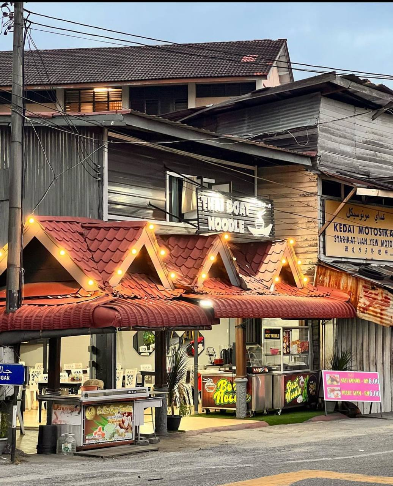

| Homepage | Menu | Details |
HELLO!
This is about our story
| Founder Cha Kuey Pandan KB is Yusof Bin Ismail. Cha Kuey Pandan KB has been established in 2005 and after four years the business started too grown bigger than before. The owner said that their business started too grown more bigger after the big flood that happened in Kelantan in 2014. The Cha Kuey Pandan started got more bigger and always sold out after the big flood. He has chosen to open the stall at Jalan Sultan Yahya Petra, Bandar Kota Bharu, 15200 Kota Bharu, Kelantan. This location is very strategic because this area is near the school and that area is the road that people always take to go to work and come back from work. The main menu at the restaurant is Cha Kuey pandan. The Cha Kuey pandan is very famous at the stall. His wife also opens a boat noodle restaurant next to his stall. They boat noodle restaurant have variety of noodle and side dish that can be choose by the customer such as meatball, meat, chicken and more. |
{kind=link}